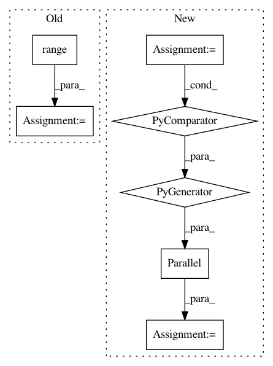

35c1805993c33e67a394193c7cae9a3f38a7607f,nilearn/decomposition/canica.py,CanICA,fit,#CanICA#Any#Any#Any#,134
Before Change
random_state = check_random_state(self.random_state)
sparsity = np.infty
for rs in range(self.n_init):
if (distutils.version.LooseVersion(sklearn.__version__).version
> [0, 12]):
// random_state in fastica was added in 0.13
ica_maps_ = self._cache(fastica, memory_level=6)(
self.components_.T,
whiten=True, fun="cube",
random_state=random_state)[2]
else:
ica_maps_ = self._cache(fastica, memory_level=6)(
self.components_.T, whiten=True,
fun="cube")[2]
ica_maps_ = ica_maps_.T
sparsity_ = np.sum(np.abs(ica_maps_), axis=1).max()
if sparsity_ < sparsity:
sparsity = sparsity_
ica_maps = ica_maps_
// Thresholding
ratio = None
if isinstance(self.threshold, float):
ratio = self.threshold
elif self.threshold == "auto":
After Change
MultiPCA.fit(self, niimgs, y=y, confounds=confounds)
random_state = check_random_state(self.random_state)
seeds = random_state.randint(np.iinfo(np.int32).max, size=self.n_init)
if (LooseVersion(sklearn.__version__).version > [0, 12]):
// random_state in fastica was added in 0.13
results = Parallel(n_jobs=self.n_jobs, verbose=self.verbose)(
delayed(fastica)(self.components_.T,
whiten=True, fun="cube", random_state=seed)
for seed in seeds)
else:
results = Parallel(n_jobs=1, verbose=self.verbose)(
delayed(fastica)(self.components_.T, whiten=True, fun="cube")
for seed in seeds)
In pattern: SUPERPATTERN
Frequency: 3
Non-data size: 7
Instances
Project Name: nilearn/nilearn
Commit Name: 35c1805993c33e67a394193c7cae9a3f38a7607f
Time: 2014-11-21
Author: danilobzdok@gmail.com
File Name: nilearn/decomposition/canica.py
Class Name: CanICA
Method Name: fit
Project Name: alexandrebarachant/pyRiemann
Commit Name: b45f35862afbca09ff1c70be1cc4d1d6ca6c9617
Time: 2015-07-03
Author: alexandre.barachant@gmail.com
File Name: pyriemann/classification.py
Class Name: MDM
Method Name: _predict_distances
Project Name: pymc-devs/pymc3
Commit Name: 72e4750366e3cfb1ebd9f18d4d54ad1f49380928
Time: 2017-10-17
Author: aseyboldt@users.noreply.github.com
File Name: pymc3/sampling.py
Class Name:
Method Name: _mp_sample